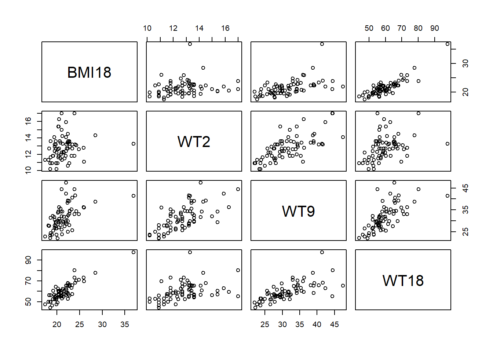
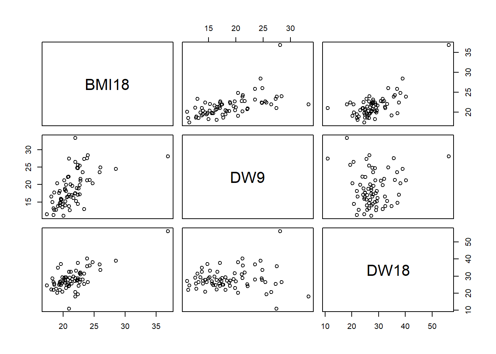
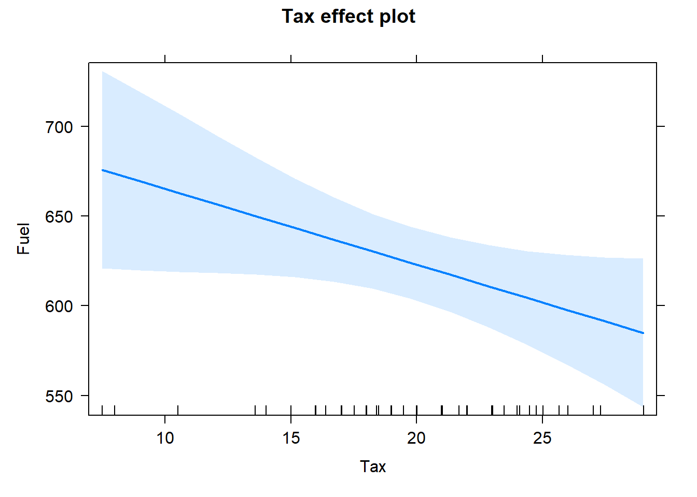
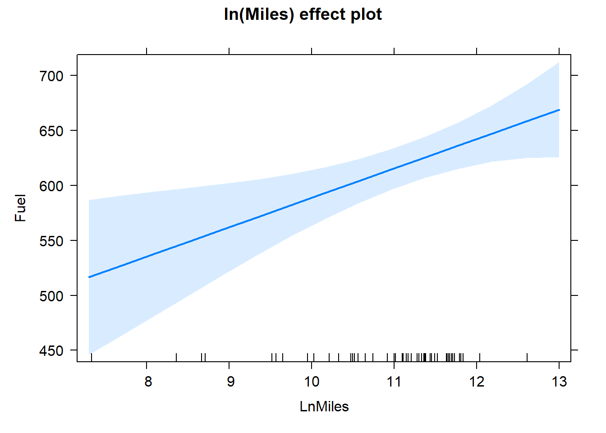
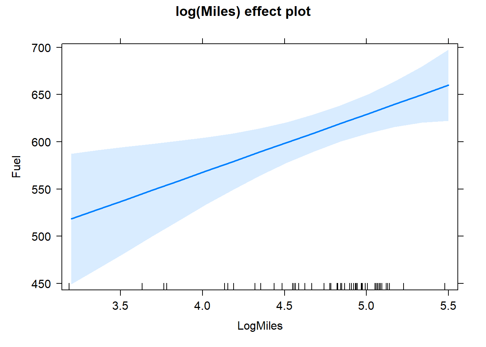
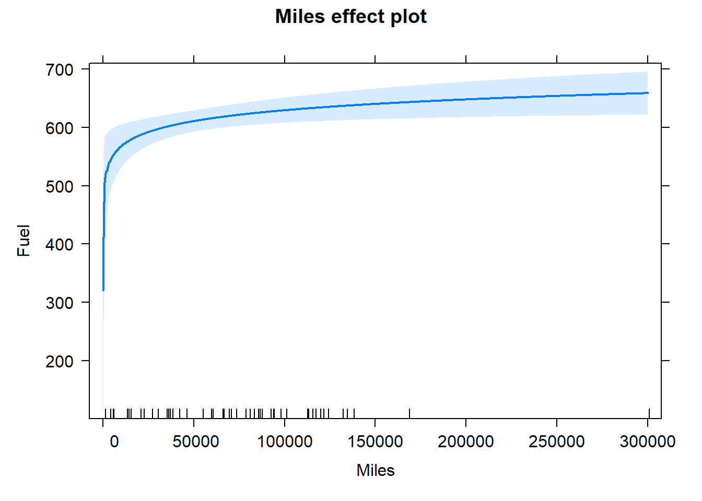

Chapter 6 Interpreting a fitted linear model
6.1 Orthogonality
Let \[\mathbf{x}_j=(x_{1,j},\ldots,x_{n,j})^T\] denote the \(n\times 1\) column vector of observed values for regressor \(X_j\). Regressors, \(\mathbf{x}_j\) and \(\mathbf{x}_k\) are orthogonal if \(\mathbf{x}_j^T \mathbf{x}_k=0\).
Let \(\boldsymbol{1}_{n\times1}\) denote an \(n\times 1\) column vector of 1s. The definition of orthogonal vectors above implies that \(\mathbf{x}_j\) is orthogonal to \(\boldsymbol{1}_{n\times1}\) if \[ \mathbf{x}_j^T \boldsymbol{1}_{n\times1} = \sum_{i=1}^n x_{i,j} = 0,\] i.e., if the values in \(\mathbf{x}_j\) sum to zero.
Let \(\bar{x}_j = \frac{1}{n}\sum_{i=1}^n x_{i,j}\) denote the sample mean of \(\mathbf{x}_j\) and \(\bar{\mathbf{x}}_j = \bar{x}_j \boldsymbol{1}_{n\times 1}\) denote the column vector that repeats \(\bar{x}_j\) \(n\) times.
Centering \(\mathbf{x}_j\) involves subtracting the sample mean of \(\mathbf{x}_j\) from \(\mathbf{x}_j\), i.e., \(\mathbf{x}_j - \bar{\mathbf{x}}_j\).
Regressors \(\mathbf{x}_j\) and \(\mathbf{x}_k\) are uncorrelated if they are orthogonal after being centered, i.e., if \[(\mathbf{x}_j - \bar{\mathbf{x}}_j)^T (\mathbf{x}_k - \bar{\mathbf{x}}_k).\] Note that the sample covariance between vectors \(\mathbf{x}_j\) and \(\mathbf{x}_k\) is \[\begin{align*} \widehat{\mathrm{cov}}(\mathbf{x}_j, \mathbf{x}_k) &= \frac{1}{n}\sum_{i=1}^n (x_i,j - \bar{x}_j)(x_i,k - \bar{x}_k) \\ &= \frac{1}{n-1}(\mathbf{x}_j - \bar{\mathbf{x}}_j)^T (\mathbf{x}_k - \bar{\mathbf{x}}_k). \end{align*}\] Thus, two centered regressors are orthogonal if their covariance is zero.
It is a desirable to have orthogonal regressors in your fitted model because they simplify estimating the relationship between the regressors and the response. Specifically:
If a regressor is orthogonal to all other regressors (and the column of 1s) in a model, adding or removing the orthogonal regressor from your model will not impact the estimated regression coefficients of the other regressors.
Since most linear regression models include an intercept, we should assess whether our regressors are orthogonal to other regressors and the column of 1s.
We consider a simple example to demonstrate how orthogonality of regressors impacts the estimated regression coefficients.
In the code below, we define vectors y, x1, and x2.
y <- c(1, 4, 6, 8, 9) # create an arbitrary response vector
x1 <- c(7, 5, 5, 7, 7) # create regressor 1
x2 <- c(-1, 2, -3, 1, 5/7) # create regressor 2 to be orthogonal to x1Regressors x1 and x2 are orthogonal since their crossproduct \(\mathbf{x}_1^T \mathbf{x}_2\) (in R, crossprod(x1, x2)) equals zero.
crossprod(x1, x2) # crossproduct is zero so x1 and x2 are orthogonal
#> [,1]
#> [1,] 0In the code below, we regress y on x1 without an intercept (lmod1). The estimated coefficient for x1 is \(\hat{\beta}_1=0.893\). Next, we then regress y on x1 and x2 without an intercept (lmod2). The estimated coefficients for x1 and x2 are \(\hat{\beta}_1=0.893\) and \(\hat{\beta}_2=0.221\), respectively. Because x1 and x2 are orthogonal (and because there are no other regressors to consider in the model), the estimated coefficient for x1 stays the same in both models.
lmod1 <- lm(y ~ x1 - 1)
coef(lmod1)
#> x1
#> 0.893401
lmod2 <- lm(y ~ x1 + x2 - 1)
coef(lmod2)
#> x1 x2
#> 0.8934010 0.2210526The previous models (lmod1 and lmod2) neglect an important characteristic of a typical linear model: we usually include an intercept coefficient (a columns of 1s as a regressor) in our model. If the regressors are not orthogonal to the column of 1s in our \(\mathbf{X}\) matrix, then the coefficients for the other regressors in the model will change when the regressors are added or removed from the model because they are not orthogonal to the column of 1s.
However, neither x1 nor x2 is orthogonal with the column of ones. We define the vector ones below, which is a column of 1s, and compute the crossproduct between ones and the two regressors. Since the crossproducts are not zero, x1 and x2 are not orthogonal to the column of ones.
ones <- rep(1, 5)
crossprod(ones, x1) # not zero
#> [,1]
#> [1,] 31
crossprod(ones, x2) # not zero
#> [,1]
#> [1,] -0.2857143If we add the column of ones to lmod2 (i.e., if we include the intercept in the model), then the coefficients for both x1 and x2 change because these regressors are not orthogonal to the column of 1s, as verified by the R output below. Comparing lmod2 and lmod3, \(\hat{\beta}_1\) changes from \(0.893\) to \(0.397\) and \(\hat{\beta}_2\) changes from \(0.221\) to \(0.279\).
lmod3 <- lm(y ~ x1 + x2)
coef(lmod3)
#> (Intercept) x1 x2
#> 3.1547101 0.3969746 0.2791657For orthogonality of our regressors to be most impactful, the model’s regressors should be orthogonal to each other and the column of 1s. In that context, adding or removing any of the regressors doesn’t impact the estimated coefficients of the other regressors. In the code below, we define centered regressors x3 and x4 to be uncorrelated, i.e., x3 and x4 have sample mean zero and are orthogonal to each other.
x3 <- c(0, -1, 1, 0, 0) # sample mean is zero
x4 <- c(0, 0, 0, 1, -1) # sample mean is zero
cov(x3, x4) # 0, so x3 and x4 are uncorrelated
#> [1] 0If we fit a linear regression model with any combination of ones, x3, or x4 as regressors, the associated regression coefficients will not change. To demonstrate this, we consider all possible combinations of the three variables in the models below. We do not run the code to save space, but we summarize the results below.
coef(lm(y ~ 1)) # only column of 1s
coef(lm(y ~ x3 - 1)) # only x3
coef(lm(y ~ x4 - 1)) # only x4
coef(lm(y ~ x3)) # 1s and x3
coef(lm(y ~ x4)) # 1s and x4
coef(lm(y ~ x3 + x4 - 1)) # x3 and x4
coef(lm(y ~ x3 + x4)) # 1s, x3, and x4We simply note that in each of the previous models, because all of the regressors (and the column of 1s) are orthogonal to each other, adding or removing any regressor doesn’t impact the estimated coefficients for the other regressors in the model. Thus, the estimated coefficients were \(\hat{\beta}_{int}=5.6\), \(\hat{\beta}_{3}=1.0\), \(\hat{\beta}_{4}=-0.5\) when the relevant regressor was included in the model.
The easiest way to determine which vectors are orthogonal to each other and the intercept is to compute the crossproduct of the \(\mathbf{X}\) matrix for the largest set of regressors you are considering. Consider the matrix of crossproducts for the columns of 1s, x1, x2, x3, and x4.
crossprod(model.matrix(~ x1 + x2 + x3 + x4))
#> (Intercept) x1 x2 x3 x4
#> (Intercept) 5.0000000 31 -0.2857143 0 0.0000000
#> x1 31.0000000 197 0.0000000 0 0.0000000
#> x2 -0.2857143 0 15.5102041 -5 0.2857143
#> x3 0.0000000 0 -5.0000000 2 0.0000000
#> x4 0.0000000 0 0.2857143 0 2.0000000Consider the sequence of models below.
coef(lm(y ~ 1))
#> (Intercept)
#> 5.6The model with only an intercept has an estimated coefficient of \(\hat{\beta}_{int}=5.6\). If we add the x1 to the model with an intercept, then both coefficients change because they are not orthogonal to each other.
lmod4 <- lm(y ~ x1) # model with 1s and x1
coef(lmod4)
#> (Intercept) x1
#> 2.5 0.5If we add x2 to lmod4, we might think that only \(\hat{\beta}_{int}\) will change because x1 and x2 are orthogonal to each other. However, because x2 is not orthogonal to all of the other regressors in the model (x1 and the column of 1s), both \(\hat{\beta}_{int}\) and \(\hat{\beta}_1\) will change. The easiest way to realize this is to look at lmod2 above with only x1 and x2. When we add the column of 1s to lmod2, both \(\hat{\beta}_1\) and \(\hat{\beta}_2\) will change because neither regressor is orthogonal to the column of 1s needed to include the intercept term.
coef(lm(y ~ x1 + x2))
#> (Intercept) x1 x2
#> 3.1547101 0.3969746 0.2791657However, note that x3 is orthogonal to the column of 1s and x1. Thus, if we add x3 to lmod4, which includes both a column of 1s and x1, x3 will not change the estimated coefficients for the intercept or x1.
coef(lm(y ~ x1 + x3))
#> (Intercept) x1 x3
#> 2.5 0.5 1.0Additionally, since x4 is orthogonal to the column of 1s, x1, and x3, adding x4 to the previous model will not change the estimated coefficients for any of the other variables already in the model.
coef(lm(y ~ x1 + x3 + x4))
#> (Intercept) x1 x3 x4
#> 2.5 0.5 1.0 -0.5Lastly, if we can partition our \(\mathbf{X}\) matrix usch that \(\mathbf{X}^T \mathbf{X}\) is a block diagonal matrix, then the none of the blocks of variables will affect the estimated coefficients of the other variables.
Define a new regressor x5 below. x5 is orthogonal to the column of 1s and x1, but not x4.
x5 <- c(1, 0, 0, -1, 0) # orthogonal to ones, x1, not x4
crossprod(cbind(1, x1, x4, x5))
#> x1 x4 x5
#> 5 31 0 0
#> x1 31 197 0 0
#> x4 0 0 2 -1
#> x5 0 0 -1 2This means that if we fit the model with only the column of 1s and the intercept, the model only with x4 and x5, and then fit the model with the column of 1s, x1, x4, and x5, then the coefficients \(\hat{\beta}_{int}\) and \(\hat{\beta}_{1}\) are not impacted when x4 and x5 are added to the model. Similarly, \(\hat{\beta}_{4}\) and \(\hat{\beta}_{5}\) are not impacted when the column of 1s and x1 are added to the model with x4 and x5. See the output below.
lm(y ~ x1) # model with 1s and x1
#>
#> Call:
#> lm(formula = y ~ x1)
#>
#> Coefficients:
#> (Intercept) x1
#> 2.5 0.5
lm(y ~ x4 + x5 - 1) # model with x4 and x5 only
#>
#> Call:
#> lm(formula = y ~ x4 + x5 - 1)
#>
#> Coefficients:
#> x4 x5
#> -3 -5
lm(y ~ x1 + x4 + x5) # model with 1s, x1, x4, x5
#>
#> Call:
#> lm(formula = y ~ x1 + x4 + x5)
#>
#> Coefficients:
#> (Intercept) x1 x4 x5
#> 2.5 0.5 -3.0 -5.06.2 Example: Fuel Consumption Data
data(fuel2001, package = "alr4")The variables (for the year 2001 unless otherwise noted) are:
Drivers: Number of Licensed drivers in the stateFuelC: Gasoline sold for road use (1000s of gal.)Miles: Miles of Federal-aid highway miles in the statePop: 2001 population age 16 and overTax: Gasoline state tax rate (cents/gallon)
6.3 Setting Up a Linear Model
What is the relationship between fuel consumption and various regressors for the 50 United States and the District of Columbia?
6.3.1 Adjusting Units
- Some of the variables are adjusted for population. Others are are not.
- Some dollar values are given in thousands of dollars. Others are given in dollars.
- Some units of fuel are given in gallons. Others are given in 1000’s of gallons.
- Our model should have regressor variables with compatible units with the response variable.
- Create a new variable called
Fuelthat converts units ofFuelCfrom 1000’s of gallons to gallons per person. - Create a new variable called
Income1kthat converts the units ofIncomefrom dollars per capita to 1000’s of dollars per capita. - Convert the units of
Driversfrom number of drivers to number of drivers per capita.
Fuel: Average amount of gasoline sold for road use per person (Gallons/person)Income1K: Average personal income (in thousands) for the year 2000 per person ($1K/person)Dlic: Number of licensed drivers per 1000 persons (licensed drivers/1K persons)
# create new regressors/transformed responses to fuel2001 data frame
fuel2001$Fuel <- 1000*fuel2001$FuelC/fuel2001$Pop
fuel2001$Dlic <- 1000*fuel2001$Drivers/fuel2001$Pop
fuel2001$Income1K <- fuel2001$Income/1000summary(fuel2001)
#> Drivers FuelC Income Miles
#> Min. : 328094 Min. : 148769 Min. :20993 Min. : 1534
#> 1st Qu.: 1087128 1st Qu.: 737361 1st Qu.:25323 1st Qu.: 36586
#> Median : 2718209 Median : 2048664 Median :27871 Median : 78914
#> Mean : 3750504 Mean : 2542786 Mean :28404 Mean : 77419
#> 3rd Qu.: 4424256 3rd Qu.: 3039932 3rd Qu.:31209 3rd Qu.:112828
#> Max. :21623793 Max. :14691753 Max. :40640 Max. :300767
#> MPC Pop Tax Fuel
#> Min. : 6556 Min. : 381882 Min. : 7.50 Min. :317.5
#> 1st Qu.: 9391 1st Qu.: 1162624 1st Qu.:18.00 1st Qu.:575.0
#> Median :10458 Median : 3115130 Median :20.00 Median :626.0
#> Mean :10448 Mean : 4257046 Mean :20.15 Mean :613.1
#> 3rd Qu.:11311 3rd Qu.: 4845200 3rd Qu.:23.25 3rd Qu.:666.6
#> Max. :17495 Max. :25599275 Max. :29.00 Max. :842.8
#> Dlic Income1K
#> Min. : 700.2 Min. :20.99
#> 1st Qu.: 864.1 1st Qu.:25.32
#> Median : 909.1 Median :27.87
#> Mean : 903.7 Mean :28.40
#> 3rd Qu.: 943.0 3rd Qu.:31.21
#> Max. :1075.3 Max. :40.646.3.2 Fitting a Model
We will set up a regression model to determine how Fuel (gallons per person) is related to Tax (cents per gallon),
Dlic (drivers per capita), Income1k (thousands of dollars of income per capita), and Miles (federal highway miles).
\[E( \mbox{Fuel} \ | \ \mbox{Tax, Dlic, Income1K, Miles})=\beta_0+\beta_1 (\mbox{Tax}) +\beta_2 (\mbox{Dlic}) + \beta_3 (\mbox{Income1K}) + \beta_4 \log{(\mbox{Miles})}\]
# fit model
lmod <- lm(Fuel ~ Tax + Dlic + Income1K + log(Miles), data = fuel2001)
# summarize model
faraway::sumary(lmod)
#> Estimate Std. Error t value Pr(>|t|)
#> (Intercept) 154.19284 194.90616 0.7911 0.4329381
#> Tax -4.22798 2.03012 -2.0826 0.0428733
#> Dlic 0.47187 0.12851 3.6718 0.0006256
#> Income1K -6.13533 2.19363 -2.7969 0.0075078
#> log(Miles) 26.75518 9.33737 2.8654 0.0062592
#>
#> n = 51, p = 5, Residual SE = 64.89122, R-Squared = 0.51We see the fitted model is:
\[\widehat{\mbox{E}}(\mbox{Fuel} \ | \ \mbox{Tax, Dlic, Income1k, Miles}) = 154.19 - 4.24 (\mbox{Tax}) + 0.47 (\mbox{Dlic}) - 6.14(\mbox{Income1K}) + 26.76 \log{(\mbox{26.76})}\]
This equation represents the estimated conditional mean of Fuel given fixed values of the regressors Tax, Dlic, Income1K, and Miles.
6.4 Interpreting the Coefficients
Estimated coefficients are usually interpreted as a rate of change.
- If we increase a regressor by 1 unit (and hold all others constant), what is the predicted change in the response variable?
- Interpret the practical meaning of \(\beta_1 = -4.24\). Pay attention to units when giving your interpretation.
- The sign of a parameter estimate indicates the direction of the relationship between the regressor and the response (when all other regressors are constant).
- The sign of the effect of a regressor is often more important than its magnitude.
- If regressors are highly correlated with other regressors, both the magnitude and sign of an estimated coefficient may change depending on the values of the other regressors are in the model.
6.5 Example: Berkeley Guidance Study
Data from the Berkeley guidance study of children born in 1928-29 in Berkeley, CA. BGSgirls contains data from just the girls in the study.
data(BGSgirls, package = "alr4")
head(BGSgirls)
#> WT2 HT2 WT9 HT9 LG9 ST9 WT18 HT18 LG18 ST18 BMI18 Soma
#> 67 13.6 87.7 32.5 133.4 28.4 74 56.9 158.9 34.6 143 22.5 5.0
#> 68 11.3 90.0 27.8 134.8 26.9 65 49.9 166.0 33.8 117 18.1 4.0
#> 69 17.0 89.6 44.4 141.5 31.9 104 55.3 162.2 35.1 143 21.0 5.5
#> 70 13.2 90.3 40.5 137.1 31.8 79 65.9 167.8 39.3 148 23.4 5.5
#> 71 13.3 89.4 29.9 136.1 27.7 83 62.3 170.9 36.3 152 21.3 4.5
#> 72 11.3 85.5 22.8 130.6 23.4 60 47.4 164.9 31.8 126 17.4 3.06.6 Dictionary of Data
BMI18: the body mass index at age 18WT2,WT9, andWT18: the weights at ages 2, 9, and 18 (in kg) for the \(n=70\) girls in the study.
6.7 Analysing Relations Between Regressors
# basic scatterplot matrix
pairs(~ BMI18 + WT2 + WT9 + WT18, data = BGSgirls)
Based on the scatter plot matrix above, does there seem to be any relations among the regressors? Explain why these relations make practical sense.
How can we adjust our model to account for the relations between the regressors?
6.8 Adjusting the Regressors
Create a new regressor called
DW9that is the weight gain from age 2 to 9.Create a new regressor called
DW18that is the weight gain from age 9 to 18.
BGSgirls$DW9 <- BGSgirls$WT9-BGSgirls$WT2
BGSgirls$DW18 <- BGSgirls$WT18-BGSgirls$WT9
BGSgirls$DW218 <- BGSgirls$WT18-BGSgirls$WT2# basic scatterplot matrix
pairs(~ BMI18 + DW9 + DW18, data = BGSgirls)
- Based on the scatter plot matrix above, how can you tell that the new regressors seem to be more independent from each other?
6.9 Comparing Different Models
6.9.1 BMI relation to WT2, WT9 and WT18
m1 <- lm(BMI18 ~ WT2 + WT9 + WT18, BGSgirls)
faraway::sumary(m1)
#> Estimate Std. Error t value Pr(>|t|)
#> (Intercept) 8.309780 1.655175 5.0205 4.156e-06
#> WT2 -0.386633 0.151451 -2.5528 0.0130
#> WT9 0.031410 0.049370 0.6362 0.5268
#> WT18 0.287447 0.026026 11.0444 < 2.2e-16
#>
#> n = 70, p = 4, Residual SE = 1.33291, R-Squared = 0.786.9.2 BMI relation to WT2, DW9 and DW18
m2 <- lm(BMI18 ~ WT2 + DW9 + DW18, BGSgirls)
faraway::sumary(m2)
#> Estimate Std. Error t value Pr(>|t|)
#> (Intercept) 8.309780 1.655175 5.0205 4.156e-06
#> WT2 -0.067776 0.127509 -0.5315 0.5968
#> DW9 0.318857 0.038553 8.2706 8.683e-12
#> DW18 0.287447 0.026026 11.0444 < 2.2e-16
#>
#> n = 70, p = 4, Residual SE = 1.33291, R-Squared = 0.786.9.3 BMI relation to WT2, WT9, WT18, DW9 and DW18
m3 <- lm(BMI18 ~ WT2 + WT9 + WT18 + DW9 + DW18, BGSgirls)
faraway::sumary(m3)
#>
#> Coefficients: (2 not defined because of singularities)
#> Estimate Std. Error t value Pr(>|t|)
#> (Intercept) 8.309780 1.655175 5.0205 4.156e-06
#> WT2 -0.386633 0.151451 -2.5528 0.0130
#> WT9 0.031410 0.049370 0.6362 0.5268
#> WT18 0.287447 0.026026 11.0444 < 2.2e-16
#>
#> n = 70, p = 4, Residual SE = 1.33291, R-Squared = 0.78coef(m1)
#> (Intercept) WT2 WT9 WT18
#> 8.30977995 -0.38663273 0.03140967 0.28744733
coef(m2)
#> (Intercept) WT2 DW9 DW18
#> 8.30977995 -0.06777573 0.31885700 0.28744733
coef(m3)
#> (Intercept) WT2 WT9 WT18 DW9 DW18
#> 8.30977995 -0.38663273 0.03140967 0.28744733 NA NA| Regressor | Model 1 | Model 2 | Model 3 |
|---|---|---|---|
| Intercept | 8.298 | 8.298 | 8.298 |
| CI | (5.00,11.62) | (5.00,11.62) | (5.00,11.62) |
| WT2 | -0.383 | -0.065 | -0.383 |
| CI | (-0.69,-0.08) | (-0.32,0.19) | (-0.69,-0.08) |
| WT9 | 0.032 | – | 0.032 |
| CI | (-0.06,0.13) | – | (-0.06,0.13) |
| WT18 | 0.287 | – | – |
| CI | (0.23,0.34) | – | – |
| DW9 | – | 0.318 | NA |
| CI | – | (0.24,0.40) | NA |
| DW18 | – | 0.287 | NA |
| CI | – | (0.23,0.34) | NA |
- Comment on how the WT2 coefficient is the same/different in the different models.
When regressors are correlated, interpretation of the effect of a regressor depends not only on the other regressors in the model, but also upon the linear transformation of the variables used.
- Why are their NAs in Model 3?
6.10 Effect Plots
An effect plot displays effect of a regressor on the mean response while holding the other regressors at their mean values.
\[ \hat{y} = \beta_0 + \beta_1 (\bar{X}_1) + \beta_2 (\bar{X}_2) + \ldots + \beta_{i-1} (\bar{X}_{i-1}) + \beta_i (X_i) + \beta_{i+1} (\bar{X}_{i+1}) + \ldots + + \beta_{p-1} (\bar{X}_{p-1})\]
summary(lmod)$coefficients
#> Estimate Std. Error t value Pr(>|t|)
#> (Intercept) 154.1928446 194.9061606 0.7911132 0.4329381433
#> Tax -4.2279832 2.0301211 -2.0826261 0.0428733310
#> Dlic 0.4718712 0.1285134 3.6717660 0.0006255639
#> Income1K -6.1353310 2.1936336 -2.7968805 0.0075077902
#> log(Miles) 26.7551756 9.3373740 2.8653854 0.0062591801- Complete the code below to extract each of the coefficients in the Fuel Consumption model
lmodfrom the coefficient array above.
b0 <- summary(lmod)$coefficients[1] #beta_0
b1 <- summary(lmod)$coefficients[2] #beta_1
b2 <- summary(lmod)$coefficients[3] #beta_2
b3 <- summary(lmod)$coefficients[4] #beta_3
b4 <- summary(lmod)$coefficients[5] #beta_4- Complete the R code below to compute the sample means for each of the regressors.
xbar.Tax <- mean(fuel2001$Tax)
xbar.Dlic <- mean(fuel2001$Dlic)
xbar.Income1K <- mean(fuel2001$Income1K)
xbar.Miles <- mean(fuel2001$Miles)- What is the effect of
Taxon expected Fuel consumption when the other regressors are fixed at the sample mean values? Write a formula to express this relation.
Thus we have the model \[\mbox{E}(\mbox{Fuel} \ | \ \mbox{Tax, Dlic=??, Income1K=??, log(Miles) = ??}) = ?? - ??(\mbox{Tax})\]
library(effects) # for Effect function
#> Loading required package: carData
#> lattice theme set by effectsTheme()
#> See ?effectsTheme for details.
# effect plot for Tax regressor
plot(Effect("Tax", lmod))
- If instead of fixing the values of the regressors at their mean, we choose other values such as the minimum value of each of regressors. What effect (if any) would this have on the graph above?
6.11 Regressors on Logarithmic Scale
Logarithms are commonly used both for the response and for regressors.
summary(fuel2001)
#> Drivers FuelC Income Miles
#> Min. : 328094 Min. : 148769 Min. :20993 Min. : 1534
#> 1st Qu.: 1087128 1st Qu.: 737361 1st Qu.:25323 1st Qu.: 36586
#> Median : 2718209 Median : 2048664 Median :27871 Median : 78914
#> Mean : 3750504 Mean : 2542786 Mean :28404 Mean : 77419
#> 3rd Qu.: 4424256 3rd Qu.: 3039932 3rd Qu.:31209 3rd Qu.:112828
#> Max. :21623793 Max. :14691753 Max. :40640 Max. :300767
#> MPC Pop Tax Fuel
#> Min. : 6556 Min. : 381882 Min. : 7.50 Min. :317.5
#> 1st Qu.: 9391 1st Qu.: 1162624 1st Qu.:18.00 1st Qu.:575.0
#> Median :10458 Median : 3115130 Median :20.00 Median :626.0
#> Mean :10448 Mean : 4257046 Mean :20.15 Mean :613.1
#> 3rd Qu.:11311 3rd Qu.: 4845200 3rd Qu.:23.25 3rd Qu.:666.6
#> Max. :17495 Max. :25599275 Max. :29.00 Max. :842.8
#> Dlic Income1K
#> Min. : 700.2 Min. :20.99
#> 1st Qu.: 864.1 1st Qu.:25.32
#> Median : 909.1 Median :27.87
#> Mean : 903.7 Mean :28.40
#> 3rd Qu.: 943.0 3rd Qu.:31.21
#> Max. :1075.3 Max. :40.64- Based on the summary output above, why do you think we used a log scale on
Miles?
In the code block below, we create new variables that are the natural log and log base 10 of Miles and recreate the linear model using each of these new variables.
fuel2001$LnMiles <- log(fuel2001$Miles)
fuel2001$LogMiles <- log10(fuel2001$Miles)
lmod.ln <- lm(Fuel ~ Tax + Dlic + Income1K + LnMiles, data = fuel2001)
lmod.log <- lm(Fuel ~ Tax + Dlic + Income1K + LogMiles, data = fuel2001)
faraway::sumary(lmod.ln) #Check that model is the same
#> Estimate Std. Error t value Pr(>|t|)
#> (Intercept) 154.19284 194.90616 0.7911 0.4329381
#> Tax -4.22798 2.03012 -2.0826 0.0428733
#> Dlic 0.47187 0.12851 3.6718 0.0006256
#> Income1K -6.13533 2.19363 -2.7969 0.0075078
#> LnMiles 26.75518 9.33737 2.8654 0.0062592
#>
#> n = 51, p = 5, Residual SE = 64.89122, R-Squared = 0.51
faraway::sumary(lmod.log) #Check that model is the same
#> Estimate Std. Error t value Pr(>|t|)
#> (Intercept) 154.19284 194.90616 0.7911 0.4329381
#> Tax -4.22798 2.03012 -2.0826 0.0428733
#> Dlic 0.47187 0.12851 3.6718 0.0006256
#> Income1K -6.13533 2.19363 -2.7969 0.0075078
#> LogMiles 61.60607 21.50010 2.8654 0.0062592
#>
#> n = 51, p = 5, Residual SE = 64.89122, R-Squared = 0.516.12 Below we create an effects plot on a natural log scale.
plot(Effect("LnMiles", lmod.ln),
main = "ln(Miles) effect plot")
6.13 Below we create an effects plot on a log10 scale.
plot(Effect("LogMiles", lmod.log),
main = "log(Miles) effect plot")
6.14 Below we create an effects plot on a regular scale.
plot(Effect("Miles", lmod,
xlevels = list(Miles = seq(1, 3e5, len = 301))))
The effect of increasing Miles is greater in states with fewer miles of roadway, with relatively little change in states with the most roadway.
This is the usual effect of logarithms: the fitted effect changes most rapidly when the regressor is small and less rapidly when the predictor is large.
6.15 Interpreting Coefficients with Log Scale on Regressor
6.15.1 Natural Log Scale
Regressor \(X_j\) increasing by 1% while the other regressors remain constant is associated with a \(\beta_j/100\) increase in the response variable, on average.
- Interpret the meaning of the coefficient associated to the natural log of Miles which you can find below.
summary(lmod.ln)$coefficients[5, 1] #ln coeff
#> [1] 26.755186.15.2 Common Log (base 10) Scale
Regressor \(X_j\) increasing by a factor of 10 (an increase of 900%) while the other regressors remain constant is associated with a \(\beta_j\) increase in the response variable, on average.
- Interpret the meaning of the coefficient associated to the log base 10 of Miles which you can find below.
summary(lmod.log)$coefficients[5, 1] #log coeff
#> [1] 61.606076.16 Log-Level Interpretation
It is common for responses to be transformed to a logarithmic scale for theoretical or practical considerations.
\[\mbox{E}( \log{Y} \ | \ X)= \beta_0 + \beta_1 X.\]
This is sometimes called a log-level model.
- A unit increase in \(X\) is associated with a change in the mean \(Y\) by the multiplicative effect \(\exp^{\beta_1}\).
- Thus \(beta_1\) is the continuous exponential growth/decay rate.
It is often acceptable to approximate the expected value of a log by the log of the expected value:
\[\log{( \mbox{E}(Y \ | \ X=x) )} \approx\mbox{E}(\log{Y} \ | \ X=x)\]
Thus, we have
\[\mbox{E}(Y \ | \ X=x) \approx e^{\rm{E}(\log{Y} \ | \ X=x)} = e^{\beta_0 + \beta_1 X}=e^{\beta_0}e^{\beta_1X}.\]
6.17 Log-log Interpretation
Consider the log-log simple linear regression model
\[\mbox{E}( \log{Y} \ | \ X) = \beta_0 + \beta_1 \log{X}.\]
When we scale \(X\) by a factor of \(c\), the response is predicted to grow by a factor of \(c^{\beta_1}\), on average.
6.18 Summary of Interpretations (Simple Linear Regression)
Level-level: \(\mathbf{\mbox{E}(Y \ | \ X=x)} = \boldsymbol\beta_0 + \boldsymbol\beta_1 X\): The predicted change in the response is \(\beta_1\) when we increase \(X\) by 1 unit, on average.
Level-log: \(\mathbf{\mbox{E}(Y \ | \ X=x)} = \boldsymbol\beta_0 + \boldsymbol\beta_1 \log{X}\): When we increase \(X\) by 1%, the response is predicted to increase by \(\beta_j/100\), on average.
Log-level: \(\mathbf{\mbox{E}(\log{Y} \ | \ X=x) = \boldsymbol\beta_0 + \boldsymbol\beta_1 X}\): A unit increase in \(X\) is predicted to change the response by a factor of \(e^{\beta_1}\), on average. The continuous growth rate is \(\beta_1\).
Log-log: \(\mathbf{\mbox{E}(\log{Y} \ | \ X=x) = \boldsymbol\beta_0 + \boldsymbol\beta_1 \log{X}}\): When we scale \(X\) by a factor of \(c\), the response is predicted to grow by a factor of \(c^{\beta_1}\), on average.
6.19 More Practice
For a log-level model, interpret the relationship between \(X\) and the mean of \(Y\) when \(X\) increases by 1 unit and \(\beta_j=0.3\) and the other predictors do not change.
For a log-log model, what is the expected change in \(Y\) if we multiply \(X\) by a factor of \(c\).
For a log-log model, interpret the relationship between \(X\) and the expected value of \(Y\) when \(X\) increases by \(10\%\) and \(\beta_1=0.3\).